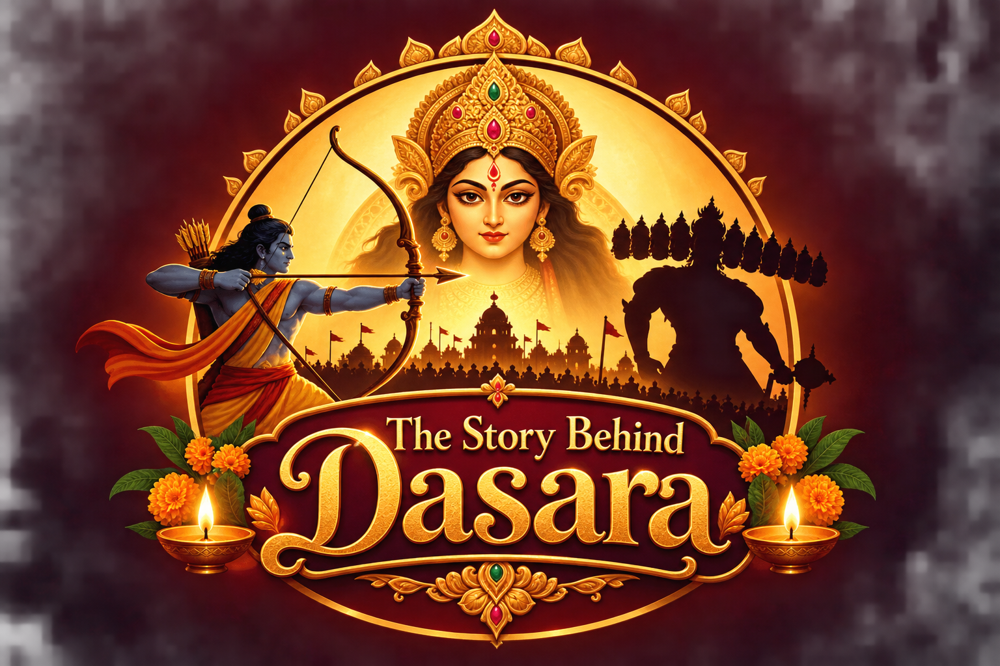

Maa Shailaputri
A thought for the day

A festival of courage, devotion and renewal
Discover traditional stories of good triumphing over evil.
Travel through four short chapters, reveal the lesson in each, and test what you learned in a five-question quiz.
Your journey begins
Explore two well-known traditions associated with Dasara and learn how communities celebrate the season in different ways.
A quick knowledge check
May the light of wisdom guide you
Dasara reminds many people of courage, truth and righteousness. May every lamp you light this Vijayadashami carry a little of that hope into your own life.
These links provide background on selected traditions. Stories and customs vary by region and community.